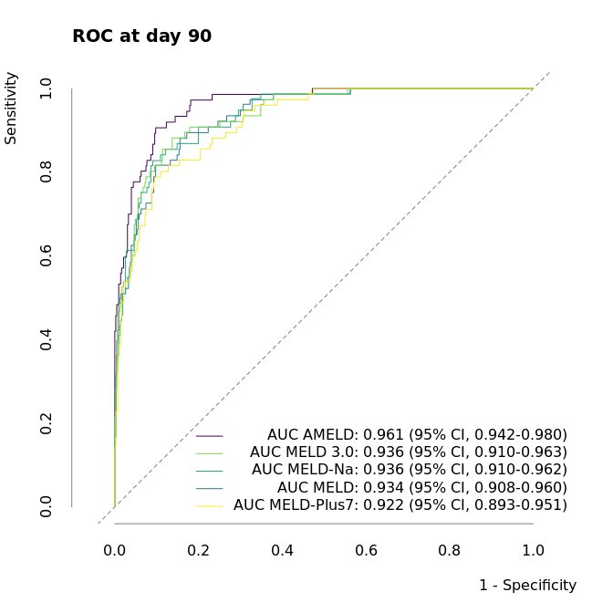

A New Model to Predict Survival in Patients with End-Stage Liver Disease
Comparision against MELD, MELD-Na, MELD-Plus7.
Sebastian Gibb1,2,✉, and Thorsten Kaiser1
2022-06-19
Abstract
Objectives: The shortage in grafts for liver transplantation requires risk stratification and allocation rules. This study aims to improve the model of end-stage liver disease (MELD) score for 90-day mortality prediction as an risk stratification tool with the help of machine learning (ML) algorithms.
Methods: We retrospectively analysed clinical and laboratory data of 654 patients who were recruited during the evaluation process for liver transplantation at the University Hospital Greifswald. After comparing 13 different ML algorithms in a nested cross-validation setting and selecting the best performing one we build a new model to predict 90-day mortality in patients with end-stage liver disease.
Results: Penalized regression algorithms yield the highest prediction performance in our ML algorithm benchmark. In favour of a simpler model we chose the least absolute shrinkage and selection operator (lasso) regression. Beside the classical MELD variables INR and bilirubin the lasso regression selected cystatin c over creatinine, and additionally IL-6, total protein and cholinesterase. The new model offers a better discrimination and calibration than MELD and MELD with sodium (MELD-Na) or the MELD-Plus7 risk score.
Conclusion: We provide a new model of end-stage liver disease that outperforms the classical MELD score for 90-day survival prediction.
Keywords: end-stage liver disease; MELD; risk stratification; survival estimation; IL-6.
1 Institute of Laboratory Medicine, Clinical Chemistry and Molecular Diagnostics, University Hospital Leipzig, Paul-List-Str. 13-15, D-04103 Leipzig, Germany.
2 Anesthesiology and Intensive Care Medicine, University Hospital Greifswald, Ferdinand-Sauerbruch-Straße, D-17475 Greifswald, Germany.
✉ Correspondence: Sebastian Gibb <mail@sebastiangibb.de>
Last updated: 2022-06-19
Checks: 7 0
Knit directory:
ampel-leipzig-meld/
This reproducible R Markdown analysis was created with workflowr (version 1.7.0). The Checks tab describes the reproducibility checks that were applied when the results were created. The Past versions tab lists the development history.
Great! Since the R Markdown file has been committed to the Git repository, you know the exact version of the code that produced these results.
Great job! The global environment was empty. Objects defined in the global environment can affect the analysis in your R Markdown file in unknown ways. For reproduciblity it’s best to always run the code in an empty environment.
The command set.seed(20210604) was run prior to running the code in the R Markdown file.
Setting a seed ensures that any results that rely on randomness, e.g.
subsampling or permutations, are reproducible.
Great job! Recording the operating system, R version, and package versions is critical for reproducibility.
Nice! There were no cached chunks for this analysis, so you can be confident that you successfully produced the results during this run.
Great job! Using relative paths to the files within your workflowr project makes it easier to run your code on other machines.
Great! You are using Git for version control. Tracking code development and connecting the code version to the results is critical for reproducibility.
The results in this page were generated with repository version ac8a09d. See the Past versions tab to see a history of the changes made to the R Markdown and HTML files.
Note that you need to be careful to ensure that all relevant files for the
analysis have been committed to Git prior to generating the results (you can
use wflow_publish or wflow_git_commit). workflowr only
checks the R Markdown file, but you know if there are other scripts or data
files that it depends on. Below is the status of the Git repository when the
results were generated:
Ignored files:
Ignored: TODO
Ignored: _targets/
Ignored: container/
Ignored: logs/
Ignored: scripts/R.sh
Note that any generated files, e.g. HTML, png, CSS, etc., are not included in this status report because it is ok for generated content to have uncommitted changes.
These are the previous versions of the repository in which changes were made
to the R Markdown (analysis/article.Rmd) and HTML (docs/article.html)
files. If you’ve configured a remote Git repository (see
?wflow_git_remote), click on the hyperlinks in the table below to
view the files as they were in that past version.
| File | Version | Author | Date | Message |
|---|---|---|---|---|
| Rmd | 3968729 | Sebastian Gibb | 2022-06-19 | feat: cite ameld with zenodo doi |
| html | fb43d01 | Sebastian Gibb | 2022-06-19 | chore: rebuild site |
| Rmd | abe89ed | Sebastian Gibb | 2022-06-19 | fix: cite zlog with zenodo doi |
| Rmd | a10ff91 | Sebastian Gibb | 2022-06-16 | fix: don’t echo code chunks |
| html | ebe29cf | Sebastian Gibb | 2022-06-16 | chore: rebuild site |
| Rmd | 43a6574 | Sebastian Gibb | 2022-06-16 | feat: further work on the manuscript |
| html | 8035219 | Sebastian Gibb | 2022-06-15 | chore: rebuild site |
| Rmd | 19d9fed | Sebastian Gibb | 2022-06-15 | feat: further work on the manuscript |
| html | d3e9462 | Sebastian Gibb | 2022-06-06 | chore: rebuild site |
| Rmd | 3181fbe | Sebastian Gibb | 2022-06-06 | refactor: suppress warning for table1 |
| html | b20484a | Sebastian Gibb | 2022-06-06 | chore: rebuild site |
| Rmd | 01f934b | Sebastian Gibb | 2022-06-06 | feat: add first discussion draft |
| Rmd | 13ac21e | Sebastian Gibb | 2022-06-06 | feat: add docx export |
| html | 983ec69 | Sebastian Gibb | 2022-03-17 | chore: rebuild site |
| Rmd | 85ff071 | Sebastian Gibb | 2022-03-15 | fix: co2eq calculation |
| Rmd | 839f920 | Sebastian Gibb | 2022-03-11 | fix: cite timeROC package |
| Rmd | 4a51c7d | Sebastian Gibb | 2022-03-11 | feat: add co2eq estimation |
| Rmd | c5d6267 | Sebastian Gibb | 2022-03-10 | feat: describe model development in methods section |
| Rmd | 74483a5 | Sebastian Gibb | 2022-02-10 | chore: remove comments |
| Rmd | 09c3fab | Sebastian Gibb | 2022-02-10 | refactor: switch to grid search |
| html | 373e7d8 | Sebastian Gibb | 2021-10-20 | chore: rebuild site |
| Rmd | 8b3ba9c | Sebastian Gibb | 2021-10-19 | feat: cite gtsummary |
| Rmd | 28ad932 | Sebastian Gibb | 2021-10-19 | feat: describe zlog in more detail |
| html | df8964f | Sebastian Gibb | 2021-10-15 | chore: rebuild site |
| Rmd | 2697ead | Sebastian Gibb | 2021-10-15 | fix: remove missing cross reference |
| Rmd | eeca976 | Sebastian Gibb | 2021-10-15 | feat: add ml method part |
| html | c66640c | Sebastian Gibb | 2021-09-14 | feat: first nnet tests |
| html | afa48d9 | Sebastian Gibb | 2021-08-07 | chore: rebuild site |
| Rmd | d32f7b3 | Sebastian Gibb | 2021-08-07 | fix: gtsummary compact theme |
| Rmd | ebf878b | Sebastian Gibb | 2021-08-07 | fix: observed vs expected mortality table |
| Rmd | 4ec3d40 | Sebastian Gibb | 2021-08-04 | feat: add table 1 and table observed vs expected mortality |
| Rmd | e41dd8c | Sebastian Gibb | 2021-08-03 | feat: add flowchart and discussion notes |
| Rmd | 523c286 | Sebastian Gibb | 2021-08-02 | refactor: use bookdown::html_document2 instead of workflowr::wflow_html to allow crossreferences |
| html | 3aab3e1 | Sebastian Gibb | 2021-08-01 | chore: rebuild site |
| Rmd | 91bfbd2 | Sebastian Gibb | 2021-08-01 | feat: add first article draft with pandoc filters |
1 Introduction
Liver cirrhosis is the terminal result of fibrotic remodeling of liver tissue due to chronic damage. An organ failure is often irreversible and the only available therapy is liver transplantation. However, the shortage in grafts for transplantation from deceased donors requires risk stratification and precise allocation rules. The allocation of liver transplantation in most countries is based on disease severity determined by the model of end-stage liver disease (MELD) (Malinchoc et al. 2000; Wiesner et al. 2003; Organ Procurement and Transplantation Network 2021). The MELD score estimates the patients’ 3-month mortality risk based on laboratory results, namely bilirubin, creatinine and international normalized ratio (INR). In general the MELD score is extended by the sodium level (MELD-Na score) as this was found to be an important additional risk factor in liver cirrhosis (Kim et al. 2008; Organ Procurement and Transplantation Network 2021). The MELD was initially developed for predicting the survival of patients undergoing transjugular intrahepatic portosystemic shunts. Afterwards it was revalidated for predicting mortality risk in patients awaiting a liver transplantation. Although the MELD score should be an objective allocation score especially the creatinine and INR are highly dependent on the utilized laboratory methods (Trotter et al. 2004; Cholongitas et al. 2007). Patients with identical disease state could have very different MELD scores and thus get different priority on the liver transplantation waiting list. Furthermore often, e.g. for acute-on-chronic liver failure, the MELD score underestimates the mortality risk (Hernaez et al. 2020).
There have been some attempts to use the data extracted from more than 300.000 electronic medical records from two hospitals in the United States to improve the MELD score (Kartoun et al. 2017). The derived MELD-Plus7 and MELD-Plus9 risk score add albumin, white blood cell count, total cholesterol, age and length of stay to the MELD-Na variables. Despite its published prediction improvement the MELD-Plus scores are not used for transplant allocation yet.
As depicted by MELD-Plus risk scores better predictive scores often need more variables and are more complicated. To reduce the risk of overlooking or incorrectly calculating and interpreting the results, clinical decision support systems may be used and could improve patient safety. The research project on digital laboratory medicine (AMPEL) develops a clinical decision support system based on laboratory diagnostics that should support clinical practitioners in interpreting the laboratory results and taking the necessary medical interventions (Eckelt et al. 2020).
This study aims to find clinical and laboratory values that improve the risk stratification for liver transplantation over classical MELD, MELD-Na and MELD-Plus scores and could be implemented as part of the AMPEL clinical decision support system.
2 Material and methods
2.1 Study population
In a retrospective cohort study we followed 778 consecutive patients, who were recruited during the evaluation process for liver transplantation at the University Hospital of Leipzig from November 2012 to June 2015. For each patient we recorded 44 variables. Among them are age, sex, etiology of liver disease, complications as listed in Table 3.1 and 25 laboratory measurements.
Figure 2.1: Flowchart Inclusion/Exclusion.
We excluded 124 patients from our analysis (Figure 2.1). One was younger than 18 years. 24 had a liver transplantation before and in 99 cases the follow up data were missing or invalid.
The Ethics Committee at the Leipzig University Faculty of Medicine approved the retrospective usage of the data for our study (reference number: 039/14ff).
2.2 MELD scores
MELD and MELD-Na were calculated as described in Organ Procurement and Transplantation Network (2021) using the following formulas: \(MELD = 10 * (0.957 \ln(creatinine [mg/dl]) + 0.378 \ln(bilirubin [mg/dl]) + 1.120 * \ln(INR) + 0.643)\), Creatinine, bilirubin and INR values lower than 1.0 mg/dl were set to 1.0 mg/dl. The maximum allowed creatinine was 4.0 mg/dl. If patients received dialysis, creatinine was set to 4.0 mg/dl. For MELD-Na MELD was calculated as above and recalculated if greater than 11 using: \(MELD\text{-}Na = MELD_i + 1.32 * (137 - Na [mmol/l]) - (0.033 * MELD_i * (137 - Na [mmol/l]))\)
Serum sodium values lower than 125 mmol/l or higher than 137 mmol/l were set to 125 mmol/l and 137 mmol/l, respectively.
The MELD-Plus7 risk score was calculated as described in Kartoun et al. (2017): \[ \begin{aligned} L = 8.53499496 &+ \\ 2.59679650 &* \log_{10}(1 + creatinine [mg/dl]) + \\ 2.06503238 &* \log_{10}(1 + bilirubin [mg/dl]) + \\ 2.99724802 &* \log_{10}(1 + INR) - \\ 6.47834101 &* \log_{10}(1 + sodium [mmol/l]) - \\ 6.34990436 &* \log_{10}(1 + albumin [g/l]) + \\ 1.92811726 &* \log_{10}(1 + wbc [th/cumm]) + \\ 0.04070442 &* age [years] \end{aligned} \]
\[MELD\text{-}Plus = \frac{\exp(L)}{1 + \exp(L)}\]
The MELD-Plus9 score was ignored because the length of stay information was not available for our cohort and the model itself wasn’t superior to MELD-Plus7 in its original publication (Kartoun et al. 2017).
2.3 Data processing and machine learning
All data processing, statistical and machine learning analyses were performed using R version 4.2.0 (R Core Team 2022). Prior to the analyses all laboratory values were zlog transformed as described in Hoffmann et al. (2017) and implemented in Gibb (2021).
\[ z = (\log(x) - \frac{\log(LL) + \log(UL)}{2}) * \frac{3.92}{\log(UL) - \log(LL)} \]
Where \(LL\) and \(UL\) are the lower and upper reference limit of the corresponding laboratory diagnostic, respectively. Missing laboratory measurements were replaced with a zlog value of zero. In similar manner if information about complications or comorbidities were missing we treat them as not present.
We compared 13 different statistical and machine learning algorithms using the mlr3 framework (Lang et al. 2019, 2022; Sonabend et al. 2021; Sonabend, Kiraly, and Lang 2022). The used algorithms are designed for analysis of survival data: Cox proportional hazards regression model (Cox 1972; Terry M. Therneau and Patricia M. Grambsch 2000; Therneau 2022), penalized regressions, namely two different implementations of the lasso (least absolute shrinkage and selection operator) regression (Tibshirani 1997; Simon et al. 2011; Friedman et al. 2022; J. J. Goeman 2010; J. Goeman et al. 2022), two different implementations of the ridge regression (Simon et al. 2011; Friedman et al. 2022; J. J. Goeman 2010; J. Goeman et al. 2022), and the elastic net regression (Simon et al. 2011; Friedman et al. 2022), two different random forest implementations (Wright and Ziegler 2017; Wright, Wager, and Probst 2021; H. Ishwaran et al. 2008; Hemant Ishwaran and Kogalur 2020), extreme gradient boosting (T. Chen and Guestrin 2016; Tianqi Chen et al. 2022), two different support vector machines (Belle et al. 2011; Fouodo 2018) and two neural networks (Katzman et al. 2018; Kvamme, Borgan, and Scheel 2019; Sonabend 2022).
To choose the best model we used nested resampling to avoid feature- and model-selection-bias. Therefore, we applied a 5-fold inner and a 3-fold outer cross-validation that was repeated 10 times. We searched the hyperparameter space using a grid search with a resolution of 10. Subsequently we selected the model with the highest median concordance index (Harrell 1982). If multiple models were comparable we chose the simpler (more penalized) one.
After selecting the final model we trained and validated it as described in Harrell, Lee, and Mark (1996). Briefly we developed our model using a 3 cross-validation that was repeated 10 times and finally predicted survival at 90 days. The predictions were grouped into equal sized intervals so that there are 50 patients in each interval. For each group the mean survival probability and the difference to the Kaplan-Meier estimate was calculated. The same procedure was repeated for 200 bootstrap samples. Subsequently the differences between predicted survival and Kaplan-Meier estimates of the bootstrap samples were averaged and added to the original model difference to obtain a bias-corrected estimated between predicted and observed survival.
The final model was compared against the MELD, MELD-Na and MELD-Plus7 score using the area under the time-dependent receiver operating characteristic curve (AUROC) based on the nonparametric inverse probability of censoring weighting estimator (IPCW) Paul Blanche (2019). Testing was applied as described in P. Blanche, Dartigues, and Jacqmin-Gadda (2013). A \(p < 0.05\) was considered as statistical significant difference.
Summary tables were built using the gtsummary package (Sjoberg et al. 2021, 2022).
3 Results
3.1 Baseline characteristics
| Characteristic | Female, N = 240 | Male, N = 414 | Overall, N = 654 |
|---|---|---|---|
| General | |||
| Follow-up time [days] | 181 (17, 411) | 198 (54, 378) | 191 (38, 384) |
| Age | 56 (51, 64) | 58 (52, 63) | 58 (52, 64) |
| LTx | 20 (8.3%) | 40 (9.7%) | 60 (9.2%) |
| Laboratory measurements | |||
| Total bilirubin [µmol/l] | 21 (10, 49) | 26 (14, 51) | 24 (13, 50) |
| Cystatin C [mg/l] | 1.31 (1.04, 1.80) | 1.32 (1.08, 1.76) | 1.32 (1.07, 1.79) |
| (Missing) | 2 | 5 | 7 |
| Creatinine [µmol/l] | 73 (58, 91) | 85 (71, 110) | 80 (65, 104) |
| INR | 1.20 (1.06, 1.50) | 1.22 (1.10, 1.44) | 1.21 (1.09, 1.46) |
| (Missing) | 1 | 1 | 2 |
| Sodium [mmol/l] | 138.8 (135.4, 141.0) | 138.0 (135.0, 140.1) | 138.1 (135.2, 140.4) |
| (Missing) | 5 | 4 | 9 |
| WBC [exp 9/l] | 6.7 (4.7, 8.8) | 6.2 (4.6, 7.8) | 6.3 (4.7, 8.3) |
| (Missing) | 10 | 13 | 23 |
| IL-6 [pg/ml] | 10 (5, 36) | 14 (6, 47) | 13 (6, 42) |
| (Missing) | 27 | 29 | 56 |
| Albumin [g/l] | 41 (35, 46) | 38 (33, 43) | 39 (34, 45) |
| (Missing) | 2 | 4 | 6 |
| Total protein [g/l] | 71 (63, 76) | 71 (65, 76) | 71 (65, 76) |
| (Missing) | 2 | 4 | 6 |
| Cholesterine [mmol/l] | 4.64 (3.41, 5.56) | 4.28 (3.34, 5.15) | 4.40 (3.34, 5.31) |
| ALAT [µkat/l] | 0.29 (0.21, 0.42) | 0.36 (0.23, 0.56) | 0.33 (0.22, 0.48) |
| (Missing) | 2 | 8 | 10 |
| ASAT [µkat/l] | 0.68 (0.49, 1.05) | 0.81 (0.61, 1.23) | 0.77 (0.55, 1.16) |
| (Missing) | 3 | 5 | 8 |
| MELD | |||
| MELD score | 10 (7, 18) | 12 (9, 17) | 11 (8, 17) |
| (Missing) | 2 | 1 | 3 |
| MELD Category | |||
| [6,9] | 111 (47%) | 146 (35%) | 257 (39%) |
| [10,20) | 80 (34%) | 196 (47%) | 276 (42%) |
| [20,30) | 30 (13%) | 50 (12%) | 80 (12%) |
| [30,40) | 12 (5.0%) | 14 (3.4%) | 26 (4.0%) |
| [40,52) | 5 (2.1%) | 7 (1.7%) | 12 (1.8%) |
| (Missing) | 2 | 1 | 3 |
| MELD-Na score | 10 (7, 19) | 12 (9, 20) | 11 (8, 20) |
| (Missing) | 5 | 4 | 9 |
| Entities | |||
| Cirrhosis | 203 (85%) | 391 (94%) | 594 (91%) |
| (Missing) | 1 | 0 | 1 |
| ALF | 6 (2.5%) | 2 (0.5%) | 8 (1.2%) |
| CLI | 30 (12%) | 21 (5.1%) | 51 (7.8%) |
| Etiology (more than 1 per patient possible) | |||
| Ethyltoxic | 114 (48%) | 297 (72%) | 411 (63%) |
| HBV | 4 (1.7%) | 16 (3.9%) | 20 (3.1%) |
| HCV | 17 (7.1%) | 28 (6.8%) | 45 (6.9%) |
| AIH | 22 (9.2%) | 9 (2.2%) | 31 (4.7%) |
| PBC | 17 (7.1%) | 0 (0%) | 17 (2.6%) |
| PSC | 5 (2.1%) | 11 (2.7%) | 16 (2.4%) |
| NASH | 17 (7.1%) | 31 (7.5%) | 48 (7.3%) |
| Cryptogenic | 36 (15%) | 32 (7.7%) | 68 (10%) |
| Complications (more than 1 per patient possible) | |||
| Dialysis | 14 (5.9%) | 19 (4.6%) | 33 (5.1%) |
| (Missing) | 1 | 1 | 2 |
| GIB | 58 (24%) | 104 (25%) | 162 (25%) |
| HCC | 18 (7.5%) | 103 (25%) | 121 (19%) |
| SBP | 31 (13%) | 60 (15%) | 91 (14%) |
| (Missing) | 0 | 1 | 1 |
| Mortality | |||
| Within 7 days | 16 (7.2%) | 18 (4.5%) | 34 (5.5%) |
| Within 30 days | 25 (12%) | 31 (8.1%) | 56 (9.4%) |
| Within 90 days | 32 (16%) | 49 (13%) | 81 (14%) |
| Within 365 days | 39 (20%) | 61 (18%) | 100 (18%) |
In this study we analysed a cohort of 654 patients evaluated for liver transplantation (Tab. 3.1). 414 (63%) of them were men. The median (IQR) follow-up times was 191 (38, 384) days. Within the follow-up time 60 (9.2%) patients received a liver transplant and were censored for the analysis beyond this time point. The median (IQR) age of the cohort was 58 (52, 64) years.
Most of the patients presented with cirrhosis (594 (91%)). The remaining patients had an acute liver failure (8 (1.2%)) or a chronic liver insufficiency (51 (7.8%)). At evaluation time the median (IQR) MELD and MELD-Na score were 11 (8, 17) and 11 (8, 20), respectively. Within 90 days 81 (14%) patients died. In nearly two third of all patients alcohol was the main cause (411 (63%)) of their end-stage liver disease. The remaining patients had viral infections (hepatitis B and C viruse 20 (3.1%) and 45 (6.9%), respectively), autoimmune processes (autoimmune hepatitis 31 (4.7%), primary sclerosing cirrhosis 16 (2.4%)), primary biliary cirrhosis 17 (2.6%) or unknown causes (non-alcoholic steatohepatitis 48 (7.3%) and cryptogenic hepatitis 68 (10%)). The most common complications among all patients were gastrointestinal bleedings in 162 (25%) patients, followed by hepatocellular carcinoma (HCC) in 121 (19%) and spontaneous bacterial peritonitis (SBP) in 91 (14%) patients. Just 33 (5.1%) patients required a renal dialysis.
3.2 MELD scores
According to Wiesner et al. (2003) we divided our cohort into 5 MELD-score risk categories, with 257, 276, 80, 26, and 12 patients, respectively. As shown in Table 3.2 our observed 90-day mortality was 1.4 to 2.9 times higher than the predicted one. Just in the group with the lowest MELD scores the mortality was much lower.
| MELD category | Observed deaths (n) | Expected deaths (n) | Standardized mortality ratio (SMR) | Observed mortality (%) | Expected mortality (%) |
|---|---|---|---|---|---|
| [6,9] | 1 | 4.0 | 0.3 | 0.5 | 1.9 |
| [10,20) | 21 | 13.0 | 1.6 | 8.9 | 6.0 |
| [20,30) | 34 | 11.6 | 2.9 | 51.0 | 19.6 |
| [30,40) | 18 | 10.0 | 1.8 | 92.8 | 52.6 |
| [40,52) | 6 | 4.3 | 1.4 | 100.0 | 71.3 |
3.3 AMPEL MELD
The penalized regression and random forest models result in a similar high median performance in the benchmark process. In favour of simpler models we chose a lasso based approach for the final model development. The classical cox model, the data and computational intense algorithms extreme gradient boosting, support vector machines and neural networks yield a worse performance.
| Coefficient | |
|---|---|
| IL-6 | 0.193 |
| Total protein | -0.081 |
| INR | 0.067 |
| Cholinesterase | -0.037 |
| Cystatin C | 0.026 |
| Direct bilirubin | 0.010 |
The resulting model AMPEL model of end-stage liver disease (AMELD) uses 6 predictors. Beside the classical MELD variables INR and (direct) bilirubin the lasso regression selected cystatin c over creatinine, and additionally IL-6, total protein and cholinesterase.
| t [days] | 2 | 7 | 30 | 90 | 180 | 365 |
|---|---|---|---|---|---|---|
| S0 (t) | 0.0033 | 0.0088 | 0.0184 | 0.0339 | 0.0454 | 0.0511 |
The 90-day survival estimate of a given patient could be calculated as shown in (3.1).
\[\begin{align} S &= S_{0,90}^{\exp{LP}} \\ &= 0.0339 ^{\exp{( 0.1929 * zlog(\text{IL-6})-0.0805 * zlog(\text{Total protein})+0.0667 * zlog(\text{INR})-0.0368 * zlog(\text{Cholinesterase})+0.026 * zlog(\text{Cystatin C})+0.0098 * zlog(\text{Direct bilirubin}) )}} \tag{3.1} \end{align} \]
Where \(S_{0}\) is the baseline survival estimate from 3.4 and \(LP\) is the linear predictor of the coefficients in 3.3.
3.4 Model comparison

| t=2 | t=7 | t=30 | t=90 | t=180 | t=365 | |
|---|---|---|---|---|---|---|
| Non-adjusted \(p\)-values | 0.27 | 0.15 | 0.33 | 0.03 | 0.02 | 0.33 |
| Adjusted \(p\)-values | 0.75 | 0.52 | 0.84 | 0.15 | 0.08 | 0.84 |
AMELD offers the best AUROC (0.961) across all competitors. However, the difference against the second best model MELD-Na (AUROC: 0.936) is not statistical significant ( \(p = 0.15\)) after correction for multiple testing (see Table 3.5 for complete comparison).
Figure 3.1: Calibration of AMELD in comparison to MELD, MELD-Na and MELD-Plus7.
Fig. 3.1 depicts the calibration curve for AMELD and the competing MELD scores. While the prediction for low-risk patients is similar to other scores AMELD predicts the medium-risk patients more accurate. Because of the low number of very ill patients in our cohort the prediction performance in high-risk patients is poor but comparable to the other models. This would require a recalibration in a larger validation cohort.
4 Discussion
In this retrospective analysis of 654 consecutive patients, who were recruited during the evaluation process for liver transplantation at the University Hospital of Leipzig we developed a new model to predict the 90-day survival probability. Our new model, AMELD, outperforms the MELD-Na score and the recently published MELD-Plus7 risk score.
Although the Organ Procurement and Transplantation Network recommends the use of MELD-Na over MELD the sodium does not add any information to the score. Neither in the bootstrap selection nor in the variable importance of a random forest model the sodium gains any important weight (in bootstrap selection rank 18 of 42 and in a random forest variable importance rank 20 of 42, see ??, ??). Already Kartoun et al. (2017) have shown that the discrimination performance of MELD-Na is insignificantly different from the classical MELD. Consequentially it is not a component of our model.
It has shown that women get lower scores in MELD-Na and therefore are less likely getting an urgent listing for liver transplantation (gaertner2022?). To address sexual differences in laboratory measurements we applied the zlog transformation (Hoffmann et al. 2017). Additionally this transformation yield comparable laboratory measurements across different clinical laboratories and methods. It also reduce the influence of age- and sex-related differences, which could improve the objectivity of the allocation process. The already nearly normal scaled zlog-transformed laboratory measurements allow us to avoid the sample depending scaling prior to model development. Both should increase the external applicability of our approach.
Our model, AMELD, uses 6 predictors. Half of them, INR, (direct) bilirubin, and cystatin c are identical or similar to the labortory measurements utilized in the classical MELD. The direct bilirubin selected by our approach and the total bilirubin in MELD are highly correlated (spearman correlation: 1) and therefore interchangeable.
In our feature selection process cystatin C was chosen instead of creatinine. This is inline with recent studies that show a better prediction of mortality for cystatin C in unselected and critical ill patients (Helmersson-Karlqvist, Ärnlöv, and Larsson 2016; Helmersson-Karlqvist et al. 2021)
Furthermore AMELD extends MELD by additional synthesis parameters total protein and cholinesterase and most importantly the inflammatory marker IL-6.
The latter is an example where results from machine learning can aid in finding clinical meaningful patterns and guide further research. The systemic inflammatory response syndrome is an independent risk factor for poor outcome in patients with cirrhosis (Thabut et al. 2007). However neither MELD nor MELD-Na taking inflammation into account. In contrast IL-6 is the most important variable in our model. Even if IL-6 is excluded the algorithms select CRP as one of the most important variables which highlights the important role of inflammation in the prognosis of patients with end-stage liver disease. We and other researchers have already shown that adding inflammatory markers, namely IL-6 or CRP, to the classical MELD score increase the accuracy of the 90-day mortality prediction (Remmler et al. 2017; Cervoni et al. 2016).
Beside laboratory measurements we investigated 17 clinical data but none of them were chosen in our model selection process. Kartoun et al. (2017) also used the lasso approach and neither select any clinical data. Especially in retrospective analysis the clinical data are often not detailed enough to keep valuable information.
In our benchmark of 13 different machine learning algorithms we have seen that the more complex algorithm like boosting, support vector machines and neural networks perform worse than simpler ones. This may due additive effects that favor regression models or due to our relative small sample size. It has been shown that in machine learning more than 200 events per predictor variable are required to achieve good prediction performance (Ploeg, Austin, and Steyerberg 2014).
4.1 Limitations
Our study has several limitations. Principally it is a single center, retrospective analysis and without an external validation cohort. The data were collected during the evaluation process for liver transplantation at the University Hospital of Leipzig. There was no controlled follow-up process. Instead the follow-up information were recored at the next clinical admission. Furthermore we excluded all patients who had already a liver transplantation which could artificial lower the disease severity of the cohort. Next most of our patients suffered from ethyltoxic liver cirrhosis (63%) which may limited the transfer to other etiologies.
With a median MELD score of 11 (8, 17) our cohort was healthier than in previous studies that reported a score of 14-15 (Kim et al. 2008; Kartoun et al. 2017). However the 90-day mortality rate of 81 (14%) was comparable to the mortality rates seen in earlier studies that ranges from 6 to 30% (Malinchoc et al. 2000; Kim et al. 2008; Kartoun et al. 2017). Although our cohort was healthier with a medium mortality rate the classical MELD score underestimates the observed mortality 1.4 to 2.9 times. Unfortunately our sample size is very low in the high risk patient category which yield a poor but better than MELD based prediction performance of our AMELD for very ill patients.
4.2 Conclusion
In conclusion we developed a new model to predict the 90-day survival of patients during the evaluation process for liver transplantation. Our model, AMELD, extends the classical MELD predictors, INR, (direct) bilirubin, cystatin c (instead of creatinine) by synthesis parameters total protein and cholinesterase and most importantly the inflammatory marker IL-6. Using these 6 laboratory measurments the AMELD outperforms the established MELD-Na and the recently published MELD-Plus7 risk scores. For a wider adoption a prospective multi center study for model recalibration and validation is needed.
5 Data and software availability
The complete code and reproducible analysis could be found at
https://ampel-leipzig.github.io/ampel-leipzig-meld/.
Additionally all data are available in the ameld R package (Gibb 2022) at
https://github.com/ampel-leipzig/ameld
 for further investigations.
for further investigations.
6 Acknowledgement
The study was supported by the AMPEL project (www.ampel.care). This project is co-financed through public funds according to the budget decided by the Saxon State Parliament under the RL eHealthSax 2017/18 grant number 100331796. The funder provided support in the form of salaries for author SG but did not have any additional role in the study design, data collection and analysis, decision to publish, or preparation of the manuscript. We thank the whole AMPEL team for their support, and Stefan Kemnitz for his technical support regarding the use of the HPC cluster of the University Greifswald.
The calculations were conducted using the high performance computing (HPC) cluster of the University Greifswald. In 2018 the average carbon efficiency of the German power grid was 0.471 kgCO2eq/kWh (Icha, Lauf, and Kuhs 2021). A single run of the complete calculation pipeline took roughly 96 hours of computation on an Intel(R) Xeon(R) E5-2650 v4 and Intel(R) Xeon(R) Gold 6240 CPU (thermal design power: 105 and 150 W). The total estimated emissions were at least 6.77 kgCO2eq (ignoring development, test runs, etc.). This is equivalent to 44 km driven by an average car (Allekotte et al. 2021).
7 References
sessionInfo()R version 4.2.0 (2022-04-22)
Platform: x86_64-unknown-linux-gnu (64-bit)
Matrix products: default
BLAS/LAPACK: /gnu/store/ras6dprsw3wm3swk23jjp8ww5dwxj333-openblas-0.3.18/lib/libopenblasp-r0.3.18.so
locale:
[1] LC_CTYPE=en_US.UTF-8 LC_NUMERIC=C
[3] LC_TIME=en_US.UTF-8 LC_COLLATE=en_US.UTF-8
[5] LC_MONETARY=en_US.UTF-8 LC_MESSAGES=en_US.UTF-8
[7] LC_PAPER=en_US.UTF-8 LC_NAME=C
[9] LC_ADDRESS=C LC_TELEPHONE=C
[11] LC_MEASUREMENT=en_US.UTF-8 LC_IDENTIFICATION=C
attached base packages:
[1] stats graphics grDevices utils datasets methods base
other attached packages:
[1] gtsummary_1.6.0 timeROC_0.4 ameld_0.0.26 survival_3.3-1
[5] glmnet_4.1-4 Matrix_1.4-1 viridis_0.6.2 viridisLite_0.4.0
[9] mlr3viz_0.5.9 ggplot2_3.3.6 targets_0.12.1
loaded via a namespace (and not attached):
[1] fs_1.5.2 RColorBrewer_1.1-3 bbotk_0.5.3
[4] rprojroot_2.0.3 mlr3pipelines_0.4.1 mlr3proba_0.4.11
[7] numDeriv_2016.8-1.1 tools_4.2.0 backports_1.4.1
[10] bslib_0.3.1 utf8_1.2.2 R6_2.5.1
[13] mlr3_0.13.3 colorspace_2.0-3 withr_2.5.0
[16] mlr3misc_0.10.0 tidyselect_1.1.2 gridExtra_2.3
[19] processx_3.5.3 compiler_4.2.0 git2r_0.30.1
[22] cli_3.3.0 ooplah_0.2.0 gt_0.6.0
[25] lgr_0.4.3 bookdown_0.26 sass_0.4.1
[28] scales_1.2.0 checkmate_2.1.0 mvtnorm_1.1-3
[31] pec_2022.05.04 callr_3.7.0 palmerpenguins_0.1.0
[34] commonmark_1.8.0 mlr3tuning_0.13.1 stringr_1.4.0
[37] digest_0.6.29 mlr3extralearners_0.5.37 rmarkdown_2.14
[40] param6_0.2.4 paradox_0.9.0 set6_0.2.4
[43] pkgconfig_2.0.3 htmltools_0.5.2 parallelly_1.31.1
[46] highr_0.9 fastmap_1.1.0 htmlwidgets_1.5.4
[49] rlang_1.0.2 rstudioapi_0.13 visNetwork_2.1.0
[52] shape_1.4.6 jquerylib_0.1.4 generics_0.1.2
[55] jsonlite_1.8.0 dplyr_1.0.9 magrittr_2.0.3
[58] Rcpp_1.0.8.3 munsell_0.5.0 fansi_1.0.3
[61] lifecycle_1.0.1 stringi_1.7.6 whisker_0.4
[64] yaml_2.3.5 grid_4.2.0 parallel_4.2.0
[67] dictionar6_0.1.3 listenv_0.8.0 promises_1.2.0.1
[70] crayon_1.5.1 lattice_0.20-45 splines_4.2.0
[73] knitr_1.39 ps_1.7.0 pillar_1.7.0
[76] timereg_2.0.2 igraph_1.3.1 uuid_1.1-0
[79] base64url_1.4 future.apply_1.9.0 codetools_0.2-18
[82] glue_1.6.2 evaluate_0.15 broom.helpers_1.7.0
[85] data.table_1.14.2 vctrs_0.4.1 httpuv_1.6.5
[88] foreach_1.5.2 distr6_1.6.9 tidyr_1.2.0
[91] gtable_0.3.0 purrr_0.3.4 future_1.26.1
[94] xfun_0.31 prodlim_2019.11.13 later_1.3.0
[97] tibble_3.1.7 iterators_1.0.14 workflowr_1.7.0
[100] lava_1.6.10 DiagrammeR_1.0.9 globals_0.15.0
[103] ellipsis_0.3.2